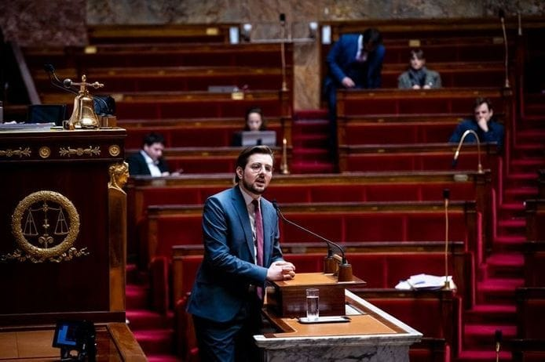

Pour toute question, écrivez-nous à philippebrun2024@gmail.com


avec le soutien de Place publique, Génération.s, GES, GRS, MRC, LRDG, L'engagement, GDS, Ensemble !, Parti de gauche, Picardie Debout, PEP, Révolution Écologique pour le Vivant (REV), Allons enfants, ADS, Nouvelle Donne, La Jeune Garde, Union démocratique bretonne (UDB), ESNT
Vous ne pouvez pas vous déplacer le 30 juin ou le 7 juillet prochain ?
Retrouvez vos informations pour voter les 30 juin et 7 juillet sur Service-Public.fr
Que vous soyez électeur ou électrice à Acquigny, Ailly, Alizay, Amfreville-Saint-Amand, Amfreville-sur-Iton, Andé, Le Val d'Hazey, Autheuil-Authouillet, Le Bec-Thomas, Les Monts du Roumois, Boissey-le-Châtel, Flancourt-Crescy-en-Roumois, Thénouville, Bosroumois, Grand Bourgtheroulde, Cailly-sur-Eure, Champenard, Connelles, Crasville, Criquebeuf-sur-Seine, Clef Vallée d'Eure, Les Damps, Fontaine-Bellenger, Fouqueville, Gaillon, Le Bosc du Theil, La Harengère, La Haye-du-Theil, La Haye-le-Comte, La Haye-Malherbe, Herqueville, Heudebouville, Heudreville-sur-Eure, Hondouville, Igoville, Incarville, Léry, Louviers, Mandeville, Le Manoir, Martot, Le Mesnil-Jourdain, Terres de Bord, Pinterville, Pîtres, Pont-de-l'Arche, Porte-Joie, Poses, La Pyle, Quatremare, Saint-Aubin-sur-Gaillon, Le Vaudreuil, Saint-Cyr-la-Campagne, Saint-Denis-des-Monts, Saint-Didier-des-Bois, Saint-Etienne-du-Vauvray, Saint-Etienne-sous-Bailleul, Saint-Germain-de-Pasquier, Saint-Julien-de-la-Liègue, Saint-Léger-du-Gennetey, Saint-Meslin-du-Bosc, Saint-Ouen-de-Pontcheuil, Saint-Ouen-du-Tilleul, Saint-Philbert-sur-Boissey, Saint-Pierre-de-Bailleul, Saint-Pierre-des-Fleurs, Saint-Pierre-du-Bosguérard, Saint-Pierre-du-Vauvray, Saint-Pierre-la-Garenne, La Saussaye, Surtauville, Surville, Le Thuit de l'Oison, Tournedos-sur-Seine, Tourville-la-Campagne, La Vacherie, Les Trois Lacs, Villers-sur-le-Roule, Vironvay, Voiscreville, Vraiville ou Val-de-Reuil… Chaque vote compte pour empêcher l'extrême-droite d'arriver au pouvoir !